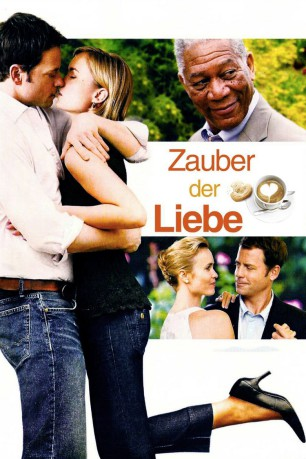

#9595 Zauber der Liebe
Alternativ: Feast of Love
 
 IMDB-Wertung: 6.7 / 10
IMDB-Wertung: 6.7 / 10  Metascore: 0
Metascore: 0 
Philosophie-Professor Harry hat einen Blick für die Liebe. Er erkennt sie oft schon, bevor die Betroffenen sie selbst überhaupt bemerken. Da er seit Ewigkeiten verheiratet ist, gilt er als Beziehungsexperte und hat für seine Mitmenschen in dem verschlafenen Provinznest immer ein offenes Ohr: Sei es für den glücklosen Coffeshop-Besitzer Bradley, dessen junge Frau sich in eine Baseballspielerin aus der gegnerischen Mannschaft verliebt, oder die junge Chloe, die sich mutig in die Beziehung mit dem Ex-Junkie Oscar stürzt, obwohl ihr ein tragisches Ende prophezeit wurde. Doch Harry selbst hat mit einem schweren Verlust zu kämpfen und merkt erst spät, wie einsam sich seine eigene Frau fühlt ...
Jahr: 2007
Dauer: 101 Minuten
FSK: 12
Land: USA Studio: MGMTonspuren: DD2.0 - ,
Untertitel:
Auflösung: 1080p (1920x800) Größe: 8417 MB
Genre: Drama, Liebe
Regisseur: Robert Benton
Drehbuch: Allison Burnett, Charles Baxter
Soundtrack: Stephen Trask
Darsteller:
 Morgan Freeman als Harry Stevenson
Morgan Freeman als Harry Stevenson Greg Kinnear als Bradley Smith
Greg Kinnear als Bradley Smith Radha Mitchell als Diana
Radha Mitchell als Diana Billy Burke als David Watson
Billy Burke als David Watson Selma Blair als Kathryn
Selma Blair als Kathryn Alexa Davalos als Chloe
Alexa Davalos als Chloe- Toby Hemingway als Oscar
 Stana Katic als Jenny
Stana Katic als Jenny- Erika Marozsán als Margaret Vekashi
 Jane Alexander als Esther Stevenson
Jane Alexander als Esther Stevenson Fred Ward als Bat
Fred Ward als Bat Margo Martindale als Mrs. Maggarolian
Margo Martindale als Mrs. Maggarolian Missi Pyle als Agatha
Missi Pyle als Agatha Shannon Lucio als Janey
Shannon Lucio als Janey- Alex Mentzel als Billy
- Sherilyn Lawson als Nurse
- Megan Keller als Football Field Lover
- Jeremy Jordan als Parade participant
- Jerry Bell Jr. als Neighbour (uncredited)
- Todd Chatalas als Football Player (uncredited)
- Tobias Anderson als Minister
- Julie Vhay als Karen Watson
- Kate Mulligan als Bartender
- David Scott Rubin als Man at Party
- Scott Patrick Green als Young Minister at Funeral
- RJ Belles als Football Field Lover
- Bunny als Bradley Jr.
- Cricket als Bradley Jr.
- Thomas Bentley als Himself (uncredited)
- Joe Dustin als Coffee Shop Regular (uncredited)
- Belle Suzanne Raymond als Background Artist (uncredited)
- Rian Turner als Whooping Pedestrian (uncredited)
Datei: X:\2007(N-Z)\Zauber der Liebe (2007, FSK12, 1920x800).mkv seit 14.09.2018
Festplatte: HD 2007(A-Z)-2008(A-F)
 Es gibt insgesamt 56 Filme in der Gruppe '2007(N-Z)'
Es gibt insgesamt 56 Filme in der Gruppe '2007(N-Z)'